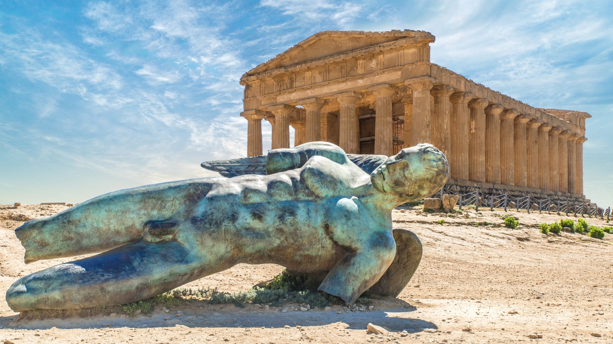

VALLE DEI TEMPLI
Patrimonio dell'Umanità UNESCO
Il parco archeologico più grande del mondo si trova proprio ad Agrigento. Custodisce le rovine di straordinari templi dorici, tra cui il Tempio della Concordia, uno dei templi greci meglio conservati in assoluto, che domina maestosamente la collina.